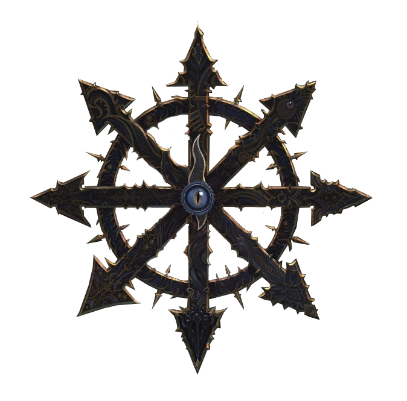
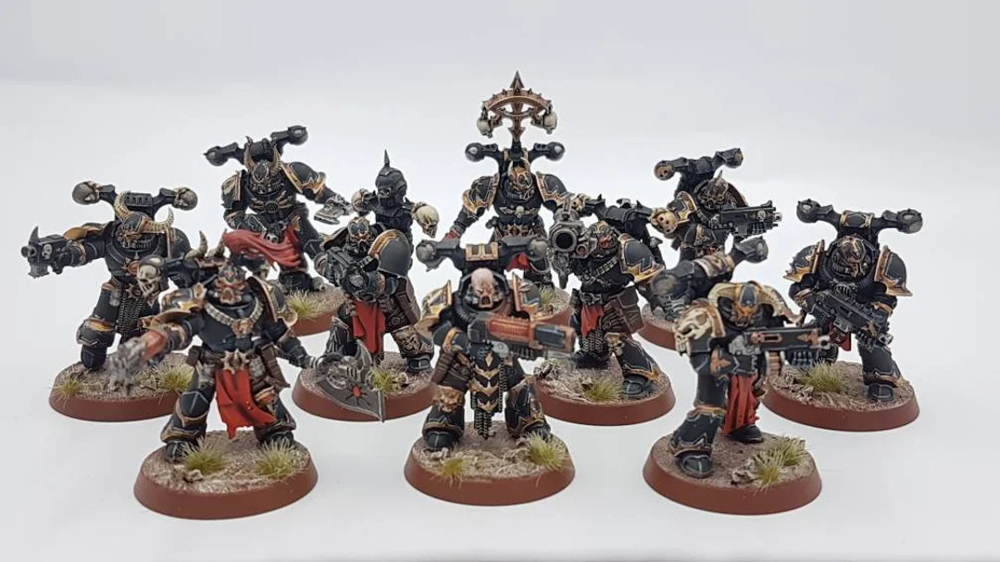

Caos
La estrella del Caos, simbolo principal para el Caos en el plano mortal

Caos es el término utilizado por los mortales para describir la fuerza espiritual maligna del desorden sobrenatural que aflige al Mundo Conocido. Es una fuerza potente compuesta de magia pura (de hecho, el Caos es magia) que puede desatar mutaciones físicas y corrupción espiritual en los seres sintientes. En perspectiva, el Caos es similar al océano, una fuerza constante y turbulenta de cambio impulsado por las emociones, todo lo contrario de las rígidas leyes físicas que gobiernan el mundo natural. Al igual que el océano, su poder aumenta y disminuye con el tiempo, pero esta marea golpea constantemente y busca invadir el plano mortal de la existencia.
El caos está encarnado por entidades inteligentes malévolas compuestas de energía mágica pura que viven en el Reino extradimensional del Caos. Estas entidades están formadas por las mismas emanaciones psíquicas de los mortales que el reino mismo. Los seres nativos del Reino del Caos (las entidades que los mortales llaman Demonios del Caos) son maliciosos y siempre observan divertidos cómo los mortales se destruyen entre sí y al mundo físico.
Los Dioses del Caos, también conocidos como los Poderes Ruinosos y los Dioses Oscuros entre los mortales, son los dioses o entidades demoníacos más poderosos que encarnan la fuerza metafísica del Caos. Existen dentro del Reino del Caos y su poder y existencia misma derivan de, y son sostenidos por, las emociones más oscuras y los impulsos psicológicos más profundos de las diversas especies inteligentes del Mundo Conocido.
Existen muchos Dioses del Caos menores dentro del Reino del Caos, pero los cuatro Dioses del Caos principales (Khorne, Tzeentch, Slaanesh y Nurgle) son particularmente infames y poderosos, y poseen una gran influencia sobre el mundo. Cada uno encarna un aspecto particular y muy básico de la existencia mortal, siendo ira, cambio, placer y muerte, respectivamente.
La dimensión de la pesadilla que es colindante con el mundo mortal conocido como el Reino del Caos o el Aethyr, del cual emana la fuerza del Caos, es a la vez un reflejo especular y la antítesis del mundo natural que subyace. La existencia del mundo natural está definida por las leyes físicas y el orden natural, mientras que las emanaciones psíquicas de los deseos y creencias subconscientes de los mortales dan forma al paisaje mágico en constante cambio del Reino del Caos.
Si bien el Reino de los Mortales es constante y estable, muy al sur del verdadero "Reino del Caos" que comienza donde la Puerta Polar norte de los Antiguos colapsó durante la Gran Catástrofe, existen los Desiertos del Caos del norte, una región muerta del mundo mortal. compuesto por desierto helado, montañas y tundra. Los Desiertos del Caos se superponen a ambos planos de existencia y sirven como interfaz entre ellos. En los Desiertos del Caos se encuentran las ciudadelas y monumentos de los orgullosos Campeones del Caos, aquellos mortales que han demostrado su valía ante los Dioses del Caos y se han ganado sus bendiciones a costa de sus propias almas.
Cultista de Khorne
Figuras de la legión del Caos
